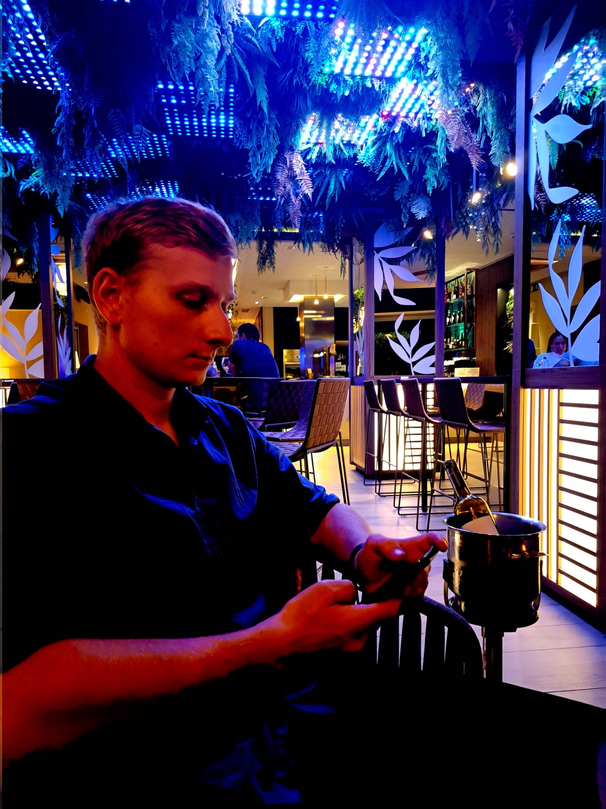

Met een scherp oog voor detail en een passie voor robuuste architectuur, bouw ik software die niet alleen werkt, maar ook schaalt. Ik ben Dennis Geerlof, een gediplomeerd Software Developer.
Mijn aanpak is direct en transparant, net als de code die ik schrijf. Geen onnodige complexiteit, maar gefocust op resultaat en veiligheid.

Verantwoordelijk voor eerstelijns support, werkplekbeheer (onboarding) en troubleshooting van complexe IT-problemen binnen Microsoft 365 omgevingen.
Ontwikkelen van SEO-gerichte websites en webshops, en fungeren als centraal aanspreekpunt voor klanten.
Ontwikkeling van nieuwe functionaliteiten voor webapplicaties en ondersteuning bij testen en debuggen.
Ontwerpen van gebruiksvriendelijke, responsive websites met het Joomla CMS en eigen extensies.
Succesvol afgerond met diepgaande kennis van HTML, CSS, JavaScript, PHP en SQL.